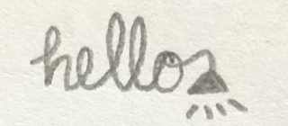

Poem: Isolate
Here is a poem I wrote while working from home during the pandemic of 2020:
It was actually inspired by a stack trace of an error I saw at the terminal:


Here is a poem I wrote while working from home during the pandemic of 2020:
It was actually inspired by a stack trace of an error I saw at the terminal:
Having some or any,
test cases for a feature,
is like having a warm and cozy blanket,
for the new and older tester alike.

The brain gymnastics needed to toggle between trying to be an awesome tester
and keeping afloat being a good enough programmer
.
Go back to the homepage.